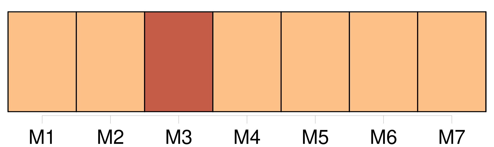

Longueur nb maillons : 73 mentions |
  |
ADEN ARABIE [Je] ne laisserai personne dire que c'est le plus bel âge de la vie. [19 phrases]
Les gens de [mon] âge, empêchés de reprendre haleine, oppressés comme des victimes à qui on maintient la tête sous l'eau, se demandaient s'il restait de l'air quelque part : il fallait pourtant les envoyer rejoindre entre deux eaux leurs familles de noyés. Comme l'on [me] classait parmi les intellectuels, [je] n'avais jamais rencontré d'autres êtres que des techniciens sans ressources : des ingénieurs, des avocats, des chartistes, des professeurs.
[Je] ne peux même plus me souvenir de cette pauvreté.
Des hasards scolaires, des conseils prudents [m'] avaient porté vers l'École Normale et cet exercice officiel qu'on appelle encore philosophie : l'une et l'autre [m'] inspirèrent bientôt tout le dégoût dont [j'] étais déjà capable.
Pendant des années, [j'] ai entendu rue d'Ulm et dans les salles de la Sorbonne des hommes importants qui parlaient au nom de l'Esprit. [16 phrases]
Ils montrent tant de bons tours, de proverbes, de figures que [je] ne sais même plus si, à force de silences avertis par les métaphores du sommeil, d'entretiens avec les passants attardés sur les places, dans les casernes, les débits, les usines, [je] retrouverai le sens des paroles droites et des simples inventions des hommes. [22 phrases] Chacun trouve au fond de ses réveils tous les désordres du temps [je] ne sais combien de fois réduits à la médiocre échelle d'une inquiétude privée. [12 phrases]
[Je] sais aujourd'hui que ce sont des fantômes, des reflets dix mille fois tordus que nous prenions au sérieux à cause de nos bonnes intentions : mais [j'] y ai mis le temps. [24 phrases] Ces journées des dupes se déroulent dans la fausse lumière de foire nationale du lendemain de la guerre : elles ont commencé avec le matin de l'armistice, la seule fête des rues que [j'] aie vue. Une grande expiration tenue des années au fond des poumons, des désirs de sexe et de boisson, le droit naturel d'allumer toutes les lampes qu'on voulait, d'insulter les anciens ennemis, le jour enfin où [j'] embrassai boulevard Montmartre devant la boucherie en gros du Matin la première bouche de [ma] vie. [19 phrases]
[Je] me perds dans un pays sans contours fermé par les grands pans verticaux de la nuit. [94 phrases] Ainsi, il y avait dans ce temps cruel dont [je] parle des hommes qui voulaient vraiment fuir les niches où les fixaient des chaînes de causes auxquelles ils ne comprenaient presque rien. [18 phrases] [J'] attends parmi [eux] , nous sommes des émigrants. [Je] ne juge pas, toute la méthode pour bien penser est aux orties, [je] tremble d'inquiétude. [1 phrases] On parle autour de [moi] du départ, on me fait des recommandations, [je] respire dans un vertige que [je] devais trouver agréable.
On me dit adieu, [je] file comme un mort.
V [26 phrases]
[Je] ne suis pas là pour des séances de spiritisme. [10 phrases] [Je] suis arrivé. [1 phrases]
VI [2 phrases] Duhamel me l'a dit quand [j'] allais prendre le train, [je] me demandais si je ne ferais pas mieux de donner [mon] billet à un pauvre. [1 phrases]
Encore dois [-je] laisser de côté le pavillon noir, [je] ne sais pas ce qu'il vaut après tout, [je] n'ai tué personne. [Je] suis tranquille derrière [mes] stores de roseaux, mes colonnes carrées, sur un fauteuil taillé par un forçat. Pensons à [mon] départ. [J'] avais peur, [mon] départ était un enfant de la peur. Quand [je] regarde de cette latitude abritée les années où [j'] ai eu vingt ans et dix-neuf ans comme on a la grippe et la typhoïde, avec le même plaisir, [je] vois une sale peur engendrant tout ce qu'un cœur peut sécréter de fausseté et d'erreurs. [Je] ne suis pas plus fin qu'un autre : [j] ai fui. [11 phrases] Quand les savants iront dire que les sirènes sont des dugongs, [je] leur rirai au nez, puisque c'est vrai : il y en a à tous les coins des vagues, dans toutes les cachettes de l'écume, et aussi Nausicaa, voire les Lotophages, voire Circé et ses merveilleux charmes. [35 phrases] [J'] avais l'impression que la vie humaine se découvre par révélation : quelle mystique.
Mais les gens de [mon] âge vivaient dans l'attente de n'importe quoi, des célèbres coups de foudre de l'aventure : bonnes histoires de nos gardiens. [7 phrases] [Je] fus ce voyageur : circuler sur de petits vapeurs écaillés, sur des dhows indigènes de l'un à l'autre bord de ce profond canal des enfers, rebondir sur les remparts de l'Afrique et de l'Arabie, ces mouvements du désordre n'imitent pas longtemps les allures de la liberté. [3 phrases] Il faut donc, pour demeurer, pour dire [ma] demeure sans rougir, aimer la puissance véritable. [4 phrases] Elles ne courent pas les routes : pas de vivants plus attachés et plus patients que les femmes qui poursuivent en bougeant à peine des actions très profondes dont elles ne savent presque rien, [je] connais une femme qui ne sait pas qu'elle a des ovaires et qui a des enfants. [15 phrases] [Je] n'invente pas des contes littéraires : j'ai connu un soldat de coloniale envoyé aux sections spéciales du cap Saint-Jacques, qui disait à ses juges empesés de galons : « Je ne peux pas ne pas céder aux crises qui me prennent, à ces fugues qui sont les seules fautes que vous ayez à me reprocher. [2 phrases]
» [Je] pense ces choses sur la mer pour lui rendre justice, être juste contre elle. [1 phrases] Il y a une grande existence identique et pesante, un monde posé contre [nous] , sans visage, écrasant les battements du cœur qu'on écoute. La mer et les déserts, l'élément mobile comme le feu et l'élément apparemment immobile, ces êtres sans voix, sans bouche, sans regards, défigurés par les brûlures ne conspirent même pas contre l'homme, elles ne sont pas de son parti, ils ne sont pas ses adversaires : à peine parvient -il à les penser à force de mesures par la géométrie et les calculs qui traitent d'étendues inflexibles : la science est simplement ce qui [nous] empêche de [nous] sentir perdus. [5 phrases] [J'] ai connu un poète qui avait été pilotin ; il sauvait son âme éternelle chaque fois qu'il lançait un seau d'eau sur les planches du pont, le matin à cinq heures. [16 phrases] Blair ne descend même pas à terre pour contempler les paysages : il a fait vingt-cinq ou trente fois escale à Massaouah et il ne cherche pas à savoir que c'est la plus belle baie du monde avec son cirque de montagnes, ses eaux jaunes et plates qui traînent des rivières de sable jaune, des amas d'herbes comme l'Amazone, et les débris de cet arbre que [j'] appelle le Flamboyant. [3 phrases]
[Je] vous dis que tous les hommes s'ennuient. [2 phrases]
MAIS seule l'expérience pouvait apprendre à celui que [je] fus qu'un mouvement dans l'immense matière anonyme ne remédie pas à des désordres qui n'ont aucun rapport avec ses dimensions : l'étendue ajoute même les siens. [3 phrases]
Moins clairvoyant, oubliant le vertige même auquel j'avais voulu échapper, [je] vécus à Aden, « ville célèbre et ancienne ». [6 phrases] » Quelle impatience lorsque [je] lisais à Paris des histoires sur la ville où [je] devais vivre, trois ou quatre mois avant [mon] départ : de [ma] chambre [j'] entendais les enfants crier dans la rue d'UIm : « chat perché » disaient -ils. [3 phrases]
[J'] étais enragé, [j'] attendais la nuit pour courir dans les rues de la montagne Sainte-Geneviève. [34 phrases] L'existence des gens de [nos] pays consiste à les combiner, les défaire, les recombiner. |

|
La ressource peut être téléchargée sur la page Ortolang
Si vous avez des questions ou vous voyez des erreurs, merci d'envoyer un mail à silvia.federzoni89@gmail.com
Site développé par S. Federzoni (contact)